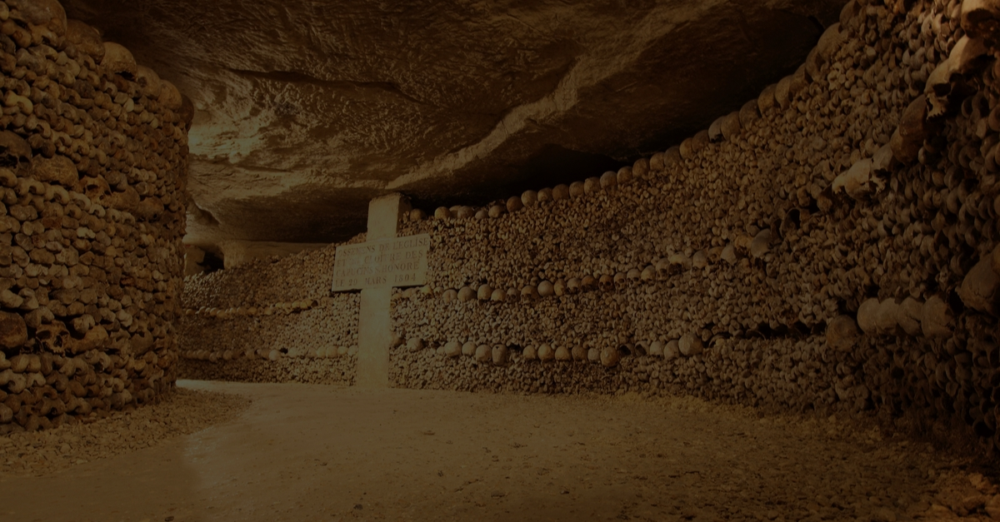

Vous prenez votre courage à deux mains et vous descendez cet escalier. Vous trouvez cette exploration de plus en plus étrange car vous voyez que vous tombez dans des catacombes
Au fur et à mesure que vous vous raprochez de la fin de ces catacombes, les bruits de fonds deviennent de plus en plus fort, mais une peur étrange et une envie de voir ce qu'il se trouve au bout vous force a continuer votre route. Cela mène en réalité à un rituel d'où vous n'êtes pas le bienvenue, malheureusment ils vous ont entendu, il est trop tard pour faire demi tour, vous êtes encerclé. A ce moment précis vous comprenez que l'offrande de cette scéance c'est vous...